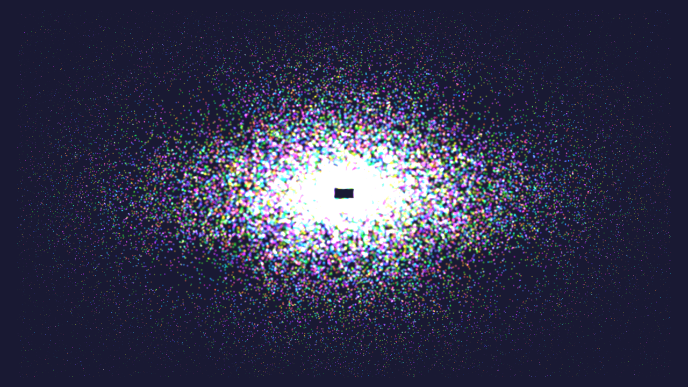

Shows you how to use compute shaders in Vulkan.

Basic particle system with compute!
- Note
- The source for this sample can be found in samples/basic_compute in the SDK.
Introduction
Compute shaders in Vulkan have first class support in the API. Compute shaders give applications the ability to perform non-graphics related tasks on the GPU.
- Note
- This sample assumes you have some knowledge of how compute shaders work in other related graphics APIs such as OpenGL ES. This sample focuses on how to use compute shaders in Vulkan specifically, and not how compute shaders work in general.
This sample will demonstrate a very simple particle system. We will move the particles around on the GPU and render them to screen as additive blended point sprites.
The Compute Pipeline
Compute pipelines are significantly simpler to create than graphics pipelines as there is far less state to consider. In the compute shader we use two storage buffers which contain position data for the particles as well as velocity data.
layout(set = 0, binding = 0, std430) buffer Positions
{
vec2 pos[];
} positions;
layout(set = 0, binding = 1, std430) readonly buffer Velocity
{
vec2 vel[];
} velocities;
The shader itself is fairly simple. It nudges the particles around depending on position and velocity and moves them back to the center of the screen when they go out of bounds.
void main()
{
vec2 current_pos = positions.pos[gl_GlobalInvocationID.x];
vec2 velocity = velocities.vel[gl_GlobalInvocationID.x];
current_pos += velocity;
if (current_pos.x > 0.95 ||
current_pos.x < -0.95 ||
current_pos.y > 0.95 ||
current_pos.y < -0.95)
{
current_pos = -2.0 * velocity + current_pos * 0.05;
}
positions.pos[gl_GlobalInvocationID.x] = current_pos;
}
We set up a pipeline layout similar to Rotating Texture.
VkDescriptorSetLayoutBinding bindings[2] = { { 0 } };
bindings[0].binding = 0;
bindings[0].descriptorType = VK_DESCRIPTOR_TYPE_STORAGE_BUFFER;
bindings[0].descriptorCount = 1;
bindings[0].stageFlags = VK_SHADER_STAGE_COMPUTE_BIT;
bindings[1].binding = 1;
bindings[1].descriptorType = VK_DESCRIPTOR_TYPE_STORAGE_BUFFER;
bindings[1].descriptorCount = 1;
bindings[1].stageFlags = VK_SHADER_STAGE_COMPUTE_BIT;
We also create a descriptor pool and descriptor set similar to Rotating Texture. We create the compute pipeline by specifying the pipeline layout and the compute shader.
initComputePipelineLayout();
initComputeDescriptorSet();
VkComputePipelineCreateInfo info = { VK_STRUCTURE_TYPE_COMPUTE_PIPELINE_CREATE_INFO };
info.stage.sType = VK_STRUCTURE_TYPE_PIPELINE_SHADER_STAGE_CREATE_INFO;
info.stage.stage = VK_SHADER_STAGE_COMPUTE_BIT;
info.stage.module = loadShaderModule(device, "shaders/particle.comp.spv");
info.stage.pName = "main";
info.layout = computePipeline.pipelineLayout;
VK_CHECK(vkCreateComputePipelines(device, pipelineCache, 1, &info, nullptr, &computePipeline.pipeline));
vkDestroyShaderModule(device, info.stage.module, nullptr);
The Graphics Pipeline
After we have run compute to move the particles around, we still need a graphics pipeline to actually draw the particles. We set up a pipeline with POINT_LIST, two attributes for position and color and enable additive blending.
VkPipelineColorBlendAttachmentState blendAttachment = { 0 };
blendAttachment.blendEnable = true;
blendAttachment.colorWriteMask = 0xf;
blendAttachment.srcColorBlendFactor = VK_BLEND_FACTOR_SRC_ALPHA;
blendAttachment.dstColorBlendFactor = VK_BLEND_FACTOR_ONE;
blendAttachment.colorBlendOp = VK_BLEND_OP_ADD;
blendAttachment.srcAlphaBlendFactor = VK_BLEND_FACTOR_SRC_ALPHA;
blendAttachment.dstAlphaBlendFactor = VK_BLEND_FACTOR_ONE;
blendAttachment.alphaBlendOp = VK_BLEND_OP_ADD;
Rendering
Our rendering callback will consist of two phases. First we run our compute workload, then begin a renderpass where we render the particles.
For synchronizing compute and vertex, we need to synchronize both ways in this case. We have a single buffer for position data. This means that while compute is running, we cannot run vertex shading. Similarly, while we're rendering the points, we cannot execute the compute shader. In terms of parallelism, this is still fine since the Mali GPU can parallelize and pipeline vertex/compute workloads with fragment shading.
Before dispatching compute, we add a barrier which will wait for all previous vertex shading to complete before starting any compute shading. After compute shading completes, we inject another barrier which blocks vertex shading until compute has completed. At the same time, we add the appropriate memory access flags.
memoryBarrier(cmd, 0, 0, VK_PIPELINE_STAGE_VERTEX_SHADER_BIT, VK_PIPELINE_STAGE_COMPUTE_SHADER_BIT);
vkCmdBindPipeline(cmd, VK_PIPELINE_BIND_POINT_COMPUTE, computePipeline.pipeline);
vkCmdBindDescriptorSets(cmd, VK_PIPELINE_BIND_POINT_COMPUTE, computePipeline.pipelineLayout, 0, 1,
&computePipeline.descriptorSet, 0, nullptr);
vkCmdDispatch(cmd, (positionBuffer.size / sizeof(vec2)) / NUM_PARTICLES_PER_WORKGROUP, 1, 1);
memoryBarrier(cmd, VK_ACCESS_SHADER_WRITE_BIT, VK_ACCESS_VERTEX_ATTRIBUTE_READ_BIT,
VK_PIPELINE_STAGE_COMPUTE_SHADER_BIT, VK_PIPELINE_STAGE_VERTEX_SHADER_BIT);
Now we can begin the render pass as normal, render the scene and submit to the swapchain as seen in Hello Triangle.
Generating the Initial Data
All the particles in the scene are essentially randomized with random initial position, velocity and color.
uniform_real_distribution<float> uniform(-1.0f, 1.0f);
mt19937 engine;
for (unsigned i = 0; i < NUM_PARTICLES; i++)
{
positions.push_back(vec2(0.2f * uniform(engine), 0.2f * uniform(engine)));
float velocity = 0.008f + 0.003f * uniform(engine);
float angle = 100.0f * uniform(engine);
velocities.push_back(velocity * vec2(glm::cos(angle), glm::sin(angle)));
float y = 0.8f + 0.2f * uniform(engine);
float saturation = 0.8f + 0.2f * uniform(engine);
float hue = 100.0f * uniform(engine);
float u = saturation * glm::cos(hue);
float v = saturation * glm::sin(hue);
vec3 rgb = mat3(1.0f, 1.0f, 1.0f, 0.0f, -0.39465f, 2.03211f, 1.13983f, -0.58060f, 0.0f) * vec3(y, u, v);
colors.push_back(vec4(rgb, 0.4f));
}
positionBuffer = createBuffer(positions.data(), positions.size() * sizeof(vec2),
VK_BUFFER_USAGE_VERTEX_BUFFER_BIT | VK_BUFFER_USAGE_STORAGE_BUFFER_BIT);
velocityBuffer = createBuffer(velocities.data(), velocities.size() * sizeof(vec2),
VK_BUFFER_USAGE_VERTEX_BUFFER_BIT | VK_BUFFER_USAGE_STORAGE_BUFFER_BIT);
colorBuffer = createBuffer(colors.data(), colors.size() * sizeof(vec4), VK_BUFFER_USAGE_VERTEX_BUFFER_BIT);